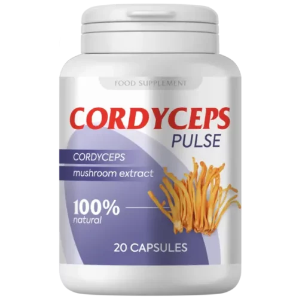

Horoszkóp az 50 év feletti nők számára: november enyhülést hoz az ízületeiknek
Cordyceps Pulse – kapszulák az ízületek támogatására, amelyeket Dr. Szabó Katalin mutatott be

Dr. Szabó Katalin – állatorvos, aki lóversenypályán dolgozott, és bemutatta ezeket a kapszulákat
Lókészítményből emberi megoldás
Hogyan hatnak a Cordyceps Pulse kapszulák, amelyeket Dr. Szabó Katalin mutatott be?
Az első 30 perc a bevétel után
- Kellemes melegség érzése jelenik meg az ízületekben
- A fájdalom enyhülni kezd, ahogy Dr. Szabó Katalin is tapasztalta
3 nap használat után
- A reggeli merevség jelentősen csökken
- A lépcsőn való felmenés 3 percet vesz igénybe 15 helyett
Hatás egy hét után
- Visszatér az ízületek teljes mozgékonysága
- Újra korlátozás nélkül csinálhatja azt, amit szeret

Minden tétel minőségellenőrzésen esik át
Egyedülálló összetétel, emberi használatra adaptálva
Cordyceps kivonat
- A szervezet támogatására választott összetevő
- Segít az ízületi szövetek fenntartásában
- Támogatja a porcszövetet, akárcsak a versenylovaknál
Vadgesztenye
- Emberi felhasználásra figyelembe véve lett beépítve
- Segít csökkenteni a gyulladást és a duzzanatot
- Segít meghosszabbítani a kapszulák hatását
Aktív összetevők
- Koncentrációjuk az emberi biztonság érdekében felére csökkent
- Segítenek gyorsan enyhíteni az akut fájdalmat
- Segítenek helyreállítani az ízületek mozgékonyságát
Építő fehérje
- Az ízületi porc alkotóeleme
- Segít gyorsan és biztonságosan helyreállítani az ízületeket
A kapszulák százszoros laboratóriumi tesztelésen estek át Dr. Szabó Katalin laboratóriumában

47 ember az első hónapban, ezrek az évek során – mindannyian visszatértek a mindennapi tevékenységeikhez
Fontos információ!
• A kereslet gyorsabban nő, mint amennyit gyártani tudunk
• Minden jelenlegi tétel már le van foglalva
• Több ezer ember már a várólistán van
Hogyan iratkozhat fel a várólistára?
- Válassza ki az országot, adja meg a nevét és telefonszámát, majd nyomja meg a „Feliratkozás" gombot
- Kapcsolja be a telefon hangját – a tanácsadó csak egyszer hív
- Ha nem veszi fel, a lista végére kerül
- Ha felveszi, lehetősége lesz Cordyceps Pulse-t a legalacsonyabb áron megrendelni
Csak a Cordyceps Pulse hivatalos képviselőitől vásároljon
Minőségi garancia
✓ Minden tétel 12 minőségellenőrzési szakaszon megy át
✓ Minden tizedik csomag további ellenőrzésen esik át
✓ Ugyanazok a szigorú szabványok, mint a kapszulák első tesztelésénél
✓ Az ár csak a gyártási önköltséget fedezi
Iratkozzon fel most a várólistára – amint lehetőség nyílik, segítünk Önnek elfelejteni az ízületi fájdalmat!
Cordyceps Pulse – állatorvosi készítményből az emberek ízületeinek támogatása
Iratkozzon fel a várólistára